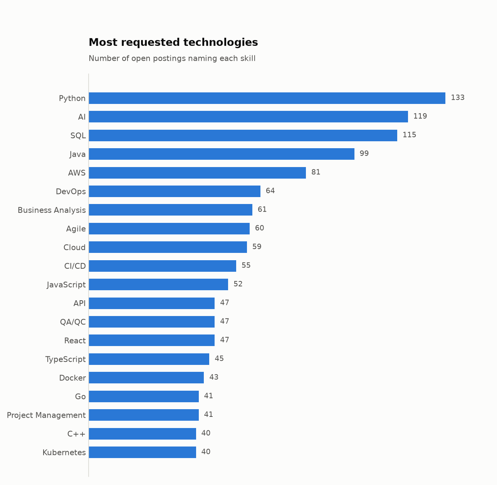
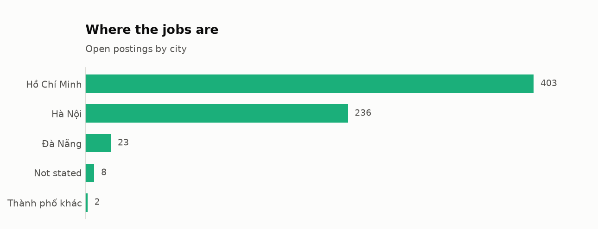
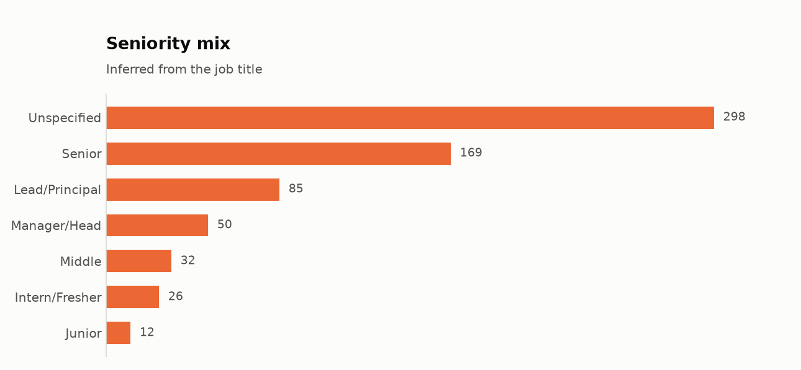
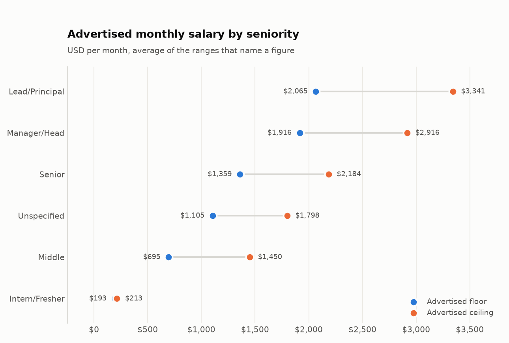

Most postings never say what they pay
Only 183 of 672 postings publish a figure. The other 489 replace it with a slogan such as "You'll love it", so a candidate cannot compare offers before applying. Every salary figure below therefore describes the minority of employers willing to post one, not the market as a whole.
English is a requirement, not a bonus
English is listed as a required skill on 190 postings (28%). That is more than any single technology: Python, the most requested one, appears on 133. Languages are counted apart from technologies below, otherwise the answer to "what is most in demand" would simply be "English".
What employers ask for


Show the numbers
| Skill | Postings | Share |
|---|---|---|
| Python | 133 | 19.8% |
| AI | 119 | 17.7% |
| SQL | 115 | 17.1% |
| Java | 99 | 14.7% |
| AWS | 81 | 12.1% |
| DevOps | 64 | 9.5% |
| Business Analysis | 61 | 9.1% |
| Agile | 60 | 8.9% |
| Cloud | 59 | 8.8% |
| CI/CD | 55 | 8.2% |
| JavaScript | 52 | 7.7% |
| API | 47 | 7.0% |
| QA/QC | 47 | 7.0% |
| React | 47 | 7.0% |
| TypeScript | 45 | 6.7% |
| Docker | 43 | 6.4% |
| Go | 41 | 6.1% |
| Project Management | 41 | 6.1% |
| C++ | 40 | 6.0% |
| Kubernetes | 40 | 6.0% |
One city holds the market
Ho Chi Minh City has 403 of 672 postings. Hanoi is a distant second and everywhere else is marginal.


Show the numbers
| City | Postings |
|---|---|
| Ho Chi Minh City | 403 |
| Hanoi | 236 |
| Da Nang | 23 |
| Not stated | 8 |
| Other cities | 2 |
Who is hired, and for how much
Among postings that publish a range, pay runs from $193–213 a month for interns to $2,065–3,341 for lead roles. Groups with fewer than five published ranges are left out rather than averaged from two or three postings.




Show the numbers
| Seniority | Postings | Avg floor | Avg ceiling |
|---|---|---|---|
| Lead/Principal | 22 | $2,065 | $3,341 |
| Manager/Head | 15 | $1,916 | $2,916 |
| Senior | 53 | $1,359 | $2,184 |
| Unspecified | 72 | $1,105 | $1,798 |
| Middle | 8 | $695 | $1,450 |
| Intern/Fresher | 10 | $193 | $213 |
Real data arrives broken. These were found and handled.
The job listing pages render in JavaScript, so there is nothing to parse in the HTML.
Each job page does embed a schema.org JobPosting block for search engines,
and the site publishes a sitemap of those pages. The collector checks
robots.txt first, makes one request every 1.5 seconds, and can resume after
an interruption.
-
The currency field lies
Every posting declares
"currency": "USD", including ones whose text reads 14 – 16 million VND/month. Trusting it would average 14 (million dong) with 1,500 (dollars). Currency is read from the text instead. -
Dong with no unit at all
Some postings write
16.000.000- 21.000.000and nothing else. No job on this board pays tens of thousands of dollars a month, so a figure above a plausibility bound is converted as dong. -
Not every tag is a skill
Internship Accepted and Fresher Accepted sit in the same field as Kubernetes. They are excluded from skill counts, and spellings like PostgreSql and Postgres are folded together.
-
An ID that was not unique
The trailing number in each URL looks like a posting ID, but three unrelated postings share "1922". Keying on it silently dropped about fifty jobs, 622 instead of 672. The full URL slug is used now.
What this does not show
- One job board, so it describes ITviec's listings rather than every IT vacancy in Vietnam.
- A snapshot of currently open postings, not a time series.
- Salary figures cover only the employers who publish one, which biases them toward companies competing openly on pay.
- Dong is converted at one fixed rate, not the rate on each posting's date.